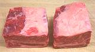
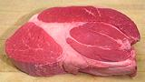

Beef
Chuck
Rib
Short Loin
Sirloin
Round
Brisket
Plate
Flank
Shank
Whole Beast
& Misc.
Innards
Veal
Chart, Cuts
SAFARI
Users
| CHUCK #113 |
The Chuck NAMP #113 (66# to 110#) extend from the neck to the fifth rib and includes the shoulder blade. These cuts are tasty and have a lot of connective tissue which keeps the meat moist and thickens stews, but they are tougher than cuts that get less exercise. | |
|---|---|---|
| Roll (Blade) |
Chuck Roll Chuck Roll Roast |
The Chuck Roll is an extension of the Rib Eye Roast into the Chuck,
but the shoulder gets more exercise, so it's not as tender, and because
of the shoulder bone structure, it's more complex. Wholesale Cut:
the Chuck Roll 116A (13# to 21#) includes the Chuck Eye Roll 116D
(8# to 14#), Chuck Tender 116B (1# to 3#) and Chuck Under Blade
116E (8# to 14#). The Chuck Roll Roast is a thick cut across the whole Chuck Roll with part of each of the three. |
| Chuck Eye Roast (Boneless Chuck Fillet, Boneless Chuck Roll) Chuck Eye Steak (Boneless Chuck Slices, Boneless Chuck Fillet Steak) |
The Chuck Eye Roll 116B is the Rib Eye extended into the Chuck, but is not as tender. The Chuck Eye Roast is a thick cut across it and the Chuck Eye Steak is a thin slice. | |
| Chuck Tender Roast
Mock Tender Roast Mock Tender Steak Chuck Tender Steak |
The Chuck Tender #116B (1# to 3#) is a narrow muscle, just above the Chuck Underblade, that superficially resembles the Tenderloin at the other end of the beast, thus the name. The roast is a thick slice across and steak is a thin slice across. This is the tenderest part of the Chuck, but certainly not as tender as Tenderloin (but it has better flavor). | |
| Chuck Roast / Steak
Under Blade Roast Bottom Chuck Roast |
"Chuck Roast / Steak" with no qualifiers is probably cut from #116E directly below the shoulder blade at the front of the beast. | |
| Clod (Blade) |
Shoulder Clod | The Shoulder Clod is the large muscle structure below the shoulder blade and behind the arm bone. Wholesale cut: the Shoulder Clod 114 (13# to 21#) Trimmed 114C (12# to 18#) may be cut into Shoulder 114E, Top Blade 114D and Shoulder Tender which may then be sub-cut. |
| Cross-rib Roast
Shoulder Clod Roast Boston Cut, English Cut, Bread and Butter Cut |
This is meat cut from over the spine end of ribs 3 through 5, bones not included. Roasts may be cut thickly crosswise from the whole roast, or may be a half or whole Cross-rib (very large). | |
| Top Blade Roast
Flatiron Roast Top Blade Steak, Flatiron Steak |
Cut from above the shoulder blade. The roast is a thick crosswise slice. The Flatiron Steak is produced by cutting the roast in half horizontally into upper and lower halves to remove a membrane. This is the most tender of the chuck cuts, and the Flatiron has been the most successful of the "new steak" cuts. | |
| Shoulder | This large section is generally cut into two major pieces and a few minor ones. The majors are Shoulder Center and Shoulder Top. | |
| Shoulder Top Steak | Cut crosswise from the top half of the Shoulder cut. Not particularly tender but not as tough as the Shoulder Center Steak. | |
| Shoulder Center
Steak Beef for Kabobs |
Cut across the lower half of the Shoulder cut, not particularly
tender. Beef for Kabobs is the steaks cut into cubes to make it more useful. | |
| Arm | Arm Roast
(Arm Pot Roast Arm Chuck Roast, Round Bone Pot Roast Arm Steak (Swiss Steak) |
The upper portion of the front leg, easily recognizable from its round bone, this is a movement muscle so it'll be tasty but far from tender. Roast is a thick slice across, steak is a thin slice. |
| Boneless Shoulder
Roast (English Roast) |
Cut from right behind the arm roast | |
| Other | 7 Bone Roast / Steak
(Center Cut Pot Roast, Chuck Roast Center Cut) |
Popular for pot roasting, the 7 Bone Roast is a cross cut of the shoulder blade and gets its name from a bone shaped like a numeral "7". It can also be sliced into steaks, tasty but not as tender as the premium cuts. |
| Vegas Strip Steak | Another of the newfangled steaks designed by marketeers to recover more bucks per beef. This one's name is copyrightd by the developer. Markets and restaurants are skeptical. | |
| Neck Pot Roast | A pot roast cut from the 7 neck vertebrae. Not common in California. | |
| Neck Bones | These are sold, sawed into chunks, as an economical cut to use when making beef stock. There is quite a bit of meat on them, but it is difficult to remove until well cooked due to the complexity of the bones it adheres tightly to. | |
| Short Ribs
#1123 Flanken Style English Style |

Short Ribs are also cut from other parts of the cow, but they are particularly meaty from this area (ribs 1 though 5). Cut across the ribs (bone in) they are called "Flanken". Cut parallel to the ribs they're "English style" and may be sold boneless. | |
| RIB #103 |
The Rib primal cut includes ribs 6 through 12 (the 13th is in the Short Loin). Cuts from this section are reasonably tender and suitable for grilling, broiling and roasting. | |
|---|---|---|
| Back Ribs | This is the upper portion of ribs 6 through 12 after the Rib Roast is removed from over them. How much meat remains depends on the meat cutter. The bottom ends of these ribs will likely have been cut off and sold as Short Ribs. | |
| Finger Meat | This meat is cut out between ribs 6 through 12 and from under the Ribeye Roast. It is removed from the Roast because it includes a lot of connective tissue and is more than a little tough. | |
|
Ribeye Roast Rib Roast |
The difference between a Ribeye Roast and a Rib Roast is that the Ribeye is boneless and the Rib Roast has rib bones. This cut comes from the top of the Rib primal cut, with the meat on the outside of the ribs. The bones removed for Ribeye are the Back Ribs (see above). | |
|
Rib Steak Ribeye Steak #1103 & #1112 |
These cuts come as bone-in (Rib Steak) and Boneless (Ribeye Steak). Other names are Spenser Steak, and sometimes Delmonico Steak. These have good marbling, good flavor and are desirable for grilling and broiling. | |
|
Tomahawk Steak |
This is a special case of the Rib Steak, including a long length of full width rib, Frenched, and with a very thick head of meat. Special considerations are necessary for cooking because of the thickness of the meat, usually 2 inches or thicker. | |
| Short Ribs
#1123 Flanken Style English Style |
Short Ribs are also cut from other primal cuts. These are the bottom ends of ribs 6 through 12 when cut from the Back Ribs. | |
| SHORT LOIN |
This cut includes the 13th (last) rib and the small of the back. This is where the most tender (and most expensive) cuts are to be found. They are also very lean but don't have the flavor of the tougher cuts. From here are cut some of the best known steaks because this section is tender enough for grilling, but they should be cooked quite rare or they'll become more tough and your money will be ill spent. | |
|---|---|---|
| Top Loin | Top Loin Roast Top Loin Steak | This is the outer muscle of the Short Loin and lies over the Tenderloin muscle (which extends into the Sirloin cut). Top Loin steaks may be boneless (Strip Loin Steak, New York Strip Steak, Kansas City Steak, Ambassador Steak, Boneless Club Steak, Hotel Style Steak, Veiny Steak) or bone in (Club Steak, Chip Club Steak, Country Club Steak, Delmonico Steak, Shell Steak, Strip Loin Steak). |
| Tenderloin | Tenderloin Roast (Whole Filet Filet Mignon Roast Tenderloin Tip Roast) Tenderloin Steaks (Filet Mignon Tournedos Filet Steak Chateaubriand Bifteck) | The Tenderloin muscle runs under (inside) the Top Loin muscle and extends into the Sirloin cut. It is tapered from a tip end (starting just behind the 13th rib) to a thick butt end within the Sirloin cut. The Tenderloin Roast often has the tip end folded under to make the roast a uniform thickness. |
| Crosscuts | Porterhouse Steak
#1173 |
This steak is a crosscut, meaning it includes both the Top Loin muscle and the Tenderloin muscle in a single steak. It differs from the T-bone steak in being thicker and including a greater width of Tenderloin (1.25 inches minimum). This is one of the premier charcoal grilling cuts, thus expensive. |
| T-bone Steak
#1174 |
This steak is a crosscut, meaning it includes both the Top Loin muscle and the Tenderloin muscle in a single steak. It differs from the Porterhouse in being a little thinner and including a narrower width of Tenderloin (0.5 inch minimum). It is a highly desirable charcoal grilling cut, thus expensive. | |
| Strip Loin Steak |
Strip Steak
New York Strip Kansas City Strip Shell Steak Club Steak |
This is like a Crosscut, but stops at the bone and includes no meat from the tenderloin side. All the names to the left are for the exact same cut, #1179 (bone in) and #1180 (boneless). The "Club Steak" name is also used for other steaks. |
| Hanging Tender #140 |
Hanger Steak Hanging Tender Bistro Steak Butcher's Steak Onglet (Fr) |
This is part of the diaphragm muscles and hangs down between the 12th and 13th ribs next to the kidneys. There's just one per beef, weighing 1 to 2-1/4 pounds, and due to its internal position it doesn't show up on beef charts. It is flavorful, but like the skirt steak (another part of the diaphragm) it needs to be cooked briefly with high heat to no more than medium rare. Traditionally butchers kept this cut for themselves. |
| SIRLOIN | Cuts from the this section are tender, but less tender than from the Short Loin because they are closer to major movement muscles in the Round. They may, however, be more flavorful. As with the Round, the terms "Bottom" and "Top" have nothing to do with the beast. When the primal cut is set on the cutting table, the "Top" is up and "Bottom" is down. The Top is the outside of the Loin and the Bottom is the inside. | |
|---|---|---|
| Bottom Butt | Bottom Sirloin Butt | Cuts from this muscle which runs under (inside) the Top But are more economical than Short Loin cuts and are tender if properly cooked. |
| Top Butt | Top Sirloin Butt Roast Top Sirloin Butt Steak |
Cuts from the Top But are considered higher quality than those from the Bottom But, but are still comparatively economical compared to Short Loin cuts. Top Boneless Sirloin Steaks are cut across the grain of this cut. |
| Tri-Tip | Tri-Tip Roast
Tri-Tip Steak (Triangle Steak Culotte) |
An elongated, triangular cut from the bottom of the Sirloin adjacent to the Flank and Round. The Tri-Tip steak is cut crosswise from this section. This cut is very popular along the West Coast, and is well known in New York, but little recognized in the rest of the country. |
| Petit Sirloin Steak |
Petit Sirloin
Steak |
This cut seems to vary in interpretation. Some vendors claim theirs are from the Top Sirloin, but it seems more official that they are one of the cuts from the Sirloin Tip, or Knuckle (See Round). This cut has very good flavor and is quite moderately tough. |
| Crosscuts | Sirloin Steak Bone-in (Pin Bone Steak Flat Bone Steak Wedge Bone Steak) |
These steaks are all cut crosswise from the upper portion of the Sirloin and include both the Top Butt and Bottom But muscles. They are named by the shape of the piece of hip bone they include. As listed they are from the front to the back of the Sirloin. They also run most tender to least tender in that same order. |
| ROUND | This primal cut includes the rump and most of the rear leg. This is a major movement muscle area so meat from this cut is lean and can be tough. Wet cooking methods such as braising or simmering should be used. | |
|---|---|---|
| Resolving the Confusion |
Top Round
Bottom Round Eye of Round Sirloin Tip |
This roast / steak is cut across the whole round, with the bone included or removed. It includes the Bottom Round, Top Round and Eye of Round. A very lean but not very tender cut, so it's best for recipes that call for the meat to be cut into thin pieces or that use a long moist cooking method. |
| Round Roast | Round Roast Crosscut Round Steak Crosscut |
This roast / steak is cut across the whole round, with the bone included or removed. It includes the Bottom Round, Top Round and Eye of Round. A very lean but not very tender cut, so it's best for recipes that call for the meat to be cut into thin pieces or that use a long moist cooking method. |
| Rump Roast | Rump Roast |  This roast / steak is cut across the whole round, with the bone included or removed. It includes the Bottom Round, Top Round and Eye of Round. A very lean but not very tender cut, so it's best for recipes that call for the meat to be cut into thin pieces or that use a long moist cooking method. |
| Bottom Round | Bottom Round Roast Bottom Round Steak |
This is the outer muscle of the upper rear leg. It is very lean, and though it isn't actually tough as shoe leather, it certainly isn't tender. Best braised or long simmered. The Bottom Round Steak is cut crosswise from this roast. |
| Standing Rump Roast Boneless Rump Roast |
These are cut from above the Bottom Round. The Boneless Rump Roast may be sold flat or it may be rolled and tied. | |
| Top Round | Top Round Roast Top Round Steak (London Broil) Round Steak |
This is the inside leg muscle, opposite the Bottom Round. Top Round Steaks are thick slices cut crosswise from the roast. Thinner slices are called simply Round Steaks. The Top Round Steak is sometimes called a London Broil, but that is the name of a menu item, not a cut, and it is more commonly from the Flank. This cut is very lean but not quite as tough as the Bottom Round. |
| Eye of Round | Eye of Round Roast Eye Round Steak |
This cut consists of a single oval muscle, which is supposed to be the tenderest part of the Round. That still isn't all that tender, so salting and special slow cooking methods have been developed. The Eye Round Steak is cut crosswise from this muscle. Again, slow cooking is called for. |
| Knuckle | Knuckle
Sirloin Tip Sirloin Tip Roast |
This is usually a wholesale cut, the front side of the leg from hip to knee. #167 has fat on, and #167A, called "Peeled" has the fat off. This cut is divided by the butcher in many ways, including the Round Tip items in the next section. |
| Sirloin Tip | Sirloin Tip Roast Sirloin Tip Steak (Trimmed Tip Steak Ball Tip Steak) Kabob Meat |
These are cut is from the Knuckle (see above) which is the front side of the leg from the hip to the knee and and is somewhat more tender than the other Round cuts which come from the back of the leg. Round Tip Steaks are cut crosswise from an untrimmed roast. If the roast is trimmed the steaks are called Trimmed Tip Steak or Ball Tip Steak. |
| Other | Ground Round
Ground Beef #136 & #137 |
Ground beef can be made from any meaty part of the cow that is free of bones, cartilage, tendons, lymph glands and heavy connective tissue. Unless otherwise specified fat content can not exceed 22%, but in no case more than 30%. There are a number of variations to both #136 and #137. |
| BRISKET | This cut, best known from Corned Beef Brisket, is from the side of the cow, just behind the separation of the Foreshank and Shoulder. #120 Beef Brisket, Deckle-off (fat and outer meat layer off), Boneless, #120A Beef Brisket, Flat Cut, Boneless; #120B Beef Brisket, Point Cut, Boneless; #120C Beef Brisket, 2-Piece, Boneless (flat and point cut apart) | |
|---|---|---|
| Brisket Flat Cut |
This is the preferred (and higher price) cut, rectangular and nearly uniform in thickness. It is moderately tough and usually used braised or roasted. The photo specimen was 8-1/2 x 5-1/2 x 1-1/2 inches and weighed 2 pounds 1-1/2 ounce, which is fairly small for this cut. | |
| Point Cut | This is the front end of the whole brisket up near the shank / shoulder separation. The photo specimen is actually a Corned Beef Point Cut, "Deckle-on". You can see the thick layer of fat with a thin layer of meat over it, normally removed (deckle-off) for fresh cuts. The photo specimen was 8 x 6-3/4 x 2-1/2 inches and weighed 3 pounds 3-3/4 ounces. This is a rather large size for a point cut. | |
| PLATE | This cut is from right behind the brisket and at the bottom end of the ribs. #121 is the whole thing with ribs in it, but you'll not find that cut in your local market. | |
|---|---|---|
| Skirt Steak | Skirt Steak #121C Outside #121D Inside |
This lesser known cut is favored for fajitas, stir fry, Bolognese sauce, Iberian and South American cuisines, as well as in fancy restaurants. The Outside Skirt is sold almost entirely to restaurants. The Inside Skirt, considered slightly less flavorful, can be found in some markets. |
| FLANK | The Flank (#193) is a relatively thin region below the Short Loin. Cuts from here used to be cheap, but no longer. | |
|---|---|---|
| Flap Meat | Flap Meat Flap Steak Bavette (Fr) |
 Cut from the flank at the bottom of the sirloin section, this is a very
thin flat piece of beef, used mainly in Mexican and Chinese recipes that
are sliced into strips. It is best cooked briefly over high heat and
must not be overcooked. Slice thin across the grain.
Cut from the flank at the bottom of the sirloin section, this is a very
thin flat piece of beef, used mainly in Mexican and Chinese recipes that
are sliced into strips. It is best cooked briefly over high heat and
must not be overcooked. Slice thin across the grain. |
| Flank Steak | Flank Steak Beef Flank Bavette (Fr) #193 | This is the muscle of the Flank below the Short Loin. It is relatively tough, but is not cheap due to its popularity for Mexican cuisine. It is best cooked briefly over high heat and must not be overcooked. Slice thin across the grain, before or after cooking. |
| SHANK | More flavor and connective tissue than any other part. While the meatier hind shank is most used, the fore shank is not neglected. | |
|---|---|---|
| Shank |
Center cut Beef Shanks (photo specimen) are great for beef soups and stews. They include plenty of the most flavorful meat on the beast, and plenty of connective tissue for a rich stock. The bone is cut in slices exposing the marrow, and very little of your money goes for fat | |
| Beef Bones #134 |
Beef Bones can come from shank, femur or humerus (all parts of the front and rear legs) and must have marrow exposed at at least one end. They are at their best when they include some flavorful meat and plenty of cartilage and connective tissue. These are very easy for the butcher to cut up on his bandsaw, so they are usually pre-cut to lengths suitable for making soup stock, though I usually split them lengthwise as well. | |
| Calf Foot |
An essential ingredient in many traditional soups, including Philadelphia Pepperpot - the soup that saved the American Revolution. | |
| Beef Tendon |
Very popular in Asia as a feature ingredient in soups and stews, these are recovered from the lower shank leading into the foot. They can also be used as a more convenient substitute for Calf Foot. The larger of the two photo specimens was 13-1/8 ounces and 12 inches long, the smaller 7-3/4 ounces and 10 inches. | |
| The WHOLE BEAST & Misc. |
Some items can come from multiple primal cuts, or from almost anywhere on the beast - or they may simply not be part of a primal cut at all. Those are here. | |
|---|---|---|
| Ground Beef #136 & #137 |
Ground beef can be made from any meaty part of the cow that is free of bones, cartilage, tendons, lymph glands and heavy connective tissue. Unless otherwise specified fat content can not exceed 22%, but in no case more than 30%. There are a number of variations to both #136 and #137. | |
| Diced Beef
Beef for Stew Beef for Kabobs #135/A/B |
This product can be prepared from any part of the cow except shank, detached cutaneous muscles and heel meat. It must be free of bones, cartilage, heavy connective tissue and lymph glands. At least 75% by weight must meet the size specification of at least 0.75 inch and no larger than 1.5 inches, but no piece may exceed 2.5 inches. Fat thickness may not exceed 0.50 inch at any point. There are variations. | |
| Cubed Steak
#1100 & #1101 |
This cut can be from any part of the beast except the shanks. It is mechanically tenderized by a special machine that dices the meat small from both sides but does not cut it all the way through. The cut must remain intact when suspended form a point 1/2 inch in from the edge. | |
| Ox Tail
#1791 |
At the very far end of the round we have the tail. This was once considered an almost worthless cut for peasants to try to survive on, but today it is distressingly expensive, in appreciation of its unique characteristics. | |
| Beef Cheeks
Joues de Boeuf (Fr) Guanciale di Manzo (It) |
This cut is very highly regarded in Italy and France, and is strongly favored for Barbacoa in Mexico. It is very tough and shot through with connective tissue, (cows use these muscles all day to chew their cud) so it is braised in a flavorful broth for at least 3-1/4 hours until very tender. | |
| Beef Lips
Labios |
Often described as "scary", this cut can be found in meat markets serving a Mexican community. They are usually braised, sometimes with oranges, and provide a tender and succulent meat for use as filling in tacos, tamales and the like. | |
| Skin
Ponmo Pomo |
Cow skins are very much a food item enjoyed in West Africa, particularly Nigeria. They are often used in assorted meats dishes and soups. Unfortunately, they are not easily available in North America. | |
| INNARDS | Herding and agricultural societies eat every edible bit of an animal, including the parts inside that many squeamish Americans turn up their noses at. Demand for these favored items makes them expensive in most countries, but they tend to quite affordable in North America. | |
|---|---|---|
| Brains |
Beefs are not particularly noted for high intellectual achievement, but they do need a fairly sizable brain to run all that musculature and complex stomach system. While called for in many older recipes, brains are not as popular today. In particular the USDA frowns on brains due to the possibility of mad cow disease, and will only allow them to be harvested from very young beefs where the risk is minimal. I've tried brains, and recommend you don't bother - sweetbreads are a far superior substitute. A calf brain weighs about 6 ounces, a cow brain about 1 pound. | |
| Kidneys Beef &Veal |
Every beef has two of these, so you might wonder why they aren't common in markets. Actually, there are several reasons. Many kidneys are destroyed in the USDA inspection process. Then there's the general degradation of American cooking knowledge. Most Americans are now so distant from the source of their food they've become squeamish about anything recognizable as part of an animal. In many ethnic cuisines this is a prized part of the animal. | |
| Hearts | Beef Hearts are very large, so they are rarely sold whole. The photo example, from an Asian market, appears to be about 1/3 of a whole heart, and with most of the plumbing cut off. It weighed 1 pound 6 ounces, and was 7-1/2 inches long, 4-3/4 inches wide and 1-3/4 inches thick. Since most Americans don't want to buy any meat that actually looks like part of an animal, most regular markets sell heart sliced about 1/2 inch thick, with most of the fat cut off. | |
| Liver Beef & Calf |
A beef liver is very much larger than you probably want for household use, so they are always sold sliced crosswise. Liver is held particularly compatible with onions in just about all beef eating cultures, so it's not easy to find a recipe that doesn't include them. The photo specimen was 11 inches long, 5 inches wide and 1 inch thick, weighing 1 pound 5 ounces. | |
| "Pizzle" |
 Beef pizzles are now easily available in North America, because any
large Asian market will have plenty of them in the frozen meat cases.
They are popular as a "medicinal" item, reputed to improve strength
and endurance in certain athletic activities that are beyond the scope
of these pages.
Beef pizzles are now easily available in North America, because any
large Asian market will have plenty of them in the frozen meat cases.
They are popular as a "medicinal" item, reputed to improve strength
and endurance in certain athletic activities that are beyond the scope
of these pages.
| |
| Suet & Tallow | Suet is the fat from around the kidneys of a bovine. It is higher in saturated fats than other beef fat, thus ideal for a number of culinary applications. Suet is most commonly rendered into tallow, the cow equivalent of lard. Both suet and tallow are much used in the traditional cuisine of England. | |
| Sweetbreads (Veal) |
These come in two varieties, "throat sweetbreads" (thymus) and "heart sweetbreads" (pancreas), also sometimes called "stomach sweetbreads". The heart sweetbreads are preferred, and have a roughly round shape. The throat sweetbreads are of a roughly cylindrical shape. They are often cooked together. The photo specimen, a pancreas, was 8 inches long, 4 inches wide, 1-1/4 inches thick and weighed 0.9 pound. | |
| Bull Testicles /
Rocky Mountain Oysters |
In Spain the balls of a fighting bull killed in the ring are highly prized, but here in California we have to settle for just any old bull. These are cooked in major cattle raising regions, particularly Spain, Mexico, Southeastern Europe and the U.S. Mountain West. Specimens weighed about 7 ounces each. RM Oysters are a lot smaller. | |
| Tongue Beef & Veal |
Beef and Veal Tongues are considered highly desirable cuts, particularly for appetizers. They are popular in all beef raising cultures, but less so in North America then elsewhere. Typically a veal tongue will weigh 1-1/2 pounds cook in 1-1/2 hours, and a beef tongue will be around 3-1/2 pounds and cook in 3-1/2 hours. | |
| Tripe | Tripe appears in many famous recipes and is the key ingredient in Philadelphia Pepperpot Soup, the soup reputed to have saved Washington's starving army. Tripe is the lining of a cow's stomach, and there are four kinds because cows have four stomachs (click on the picture for details). | |
Veal
Veal is the meat of a calf, an immature cow, and usually male.
While there is a great deal of anti-veal noise from Do-gooders and
animal rights partisans, the veal market will not go away - not so
long as people drink milk and eat cheese, yogurt and other dairy
products. This is a bit of an embarrassement for non-beef eating but
milk drinking India. For details see our
Veal Controversy page.
Click on Chart for Larger
| VEAL | Veal cuts are similar to beef cuts, but in a much simpler plan, because they are so much smaller. Veal is much more popular in Europe, particularly Italy, than it is in North America. In Europe the sauce is the thing, so a more neutral meat to carry it is appreciated. In North America robust meats are the thing and sauces are often incidental. | |
|---|---|---|
| Veal Shoulder | Veal Shoulder Beccerrito (Sp) | Veal Shoulder is of a much more manageable size than a Beef Shoulder, so it is often sold as a whole cut, or, more usually, boneless. It is quite tender, but, as with many tender cuts of various beasts, flavor is not its strong point. Flavorful sauces are in order. Veal shoulder steaks are treated much like the roasts. |
| Veal Breast | Veal Breast | The Veal Breast region is equivalent to the combined Brisket and Plate region of the beef chart. Bbecause of its much more manageable size, it is treated entirely differently from the beef brisket. |
| Veal Tongue | Veal Tongue | Veal tongue differs from beef tongue in being less than 1/2 the weight, more tender and with a milder flavor. They also have a much shorter cooking time and are not trimmed as much at the root end because the FDA considers them not to pose a mad cow disease risk. |
| Veal Shank | Veal Shank Osso Buco | This cut is used almost entirely for the famous Italian Ossobuco stew. |
| Sweetbreads | These come in two varieties, "throat sweetbreads" (thymus) and "heart sweetbreads" (pancreas), also sometimes called "stomach sweetbreads". The heart sweetbreads are preferred, and have a roughly round shape. The throat sweetbreads are of a roughly cylindrical shape. They are often cooked together. The photo specimen, a pancreas, was 8 inches long, 4 inches wide, 1-1/4 inches thick and weighed 0.9 pound. | |
Links
- B3 - Beef Info, various - Ask the Meat Man - Beef